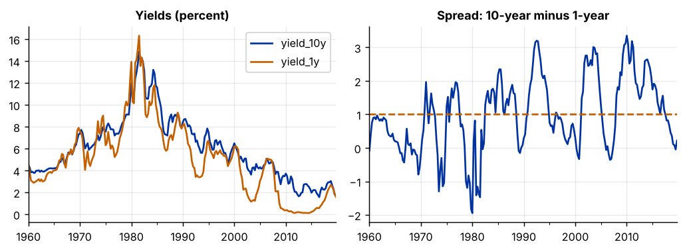
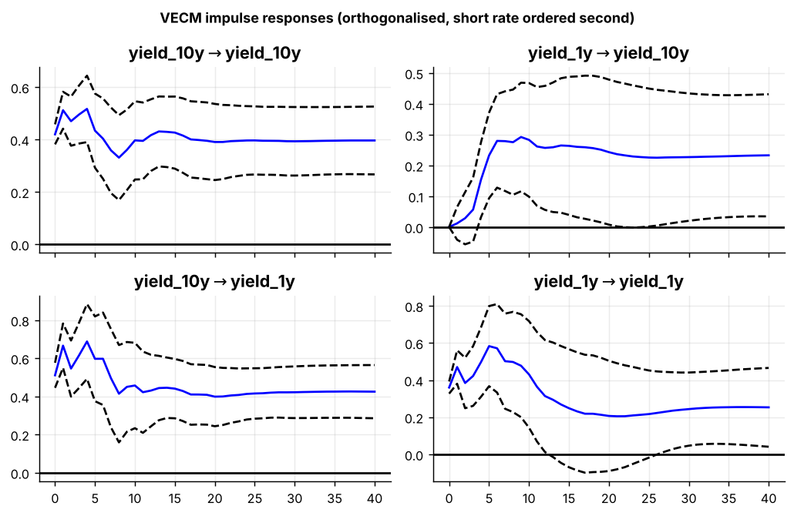

Step 1The question and the model
The question is: are short and long interest rates tied together in the long run, and which one adjusts when they drift apart? The expectations hypothesis of the term structure says the long rate is an average of expected future short rates plus a premium, so the two should not move apart permanently.
The model selection tool found that both yields are I(1) and cointegrated. A vector error-correction model (VECM) is a VAR in first differences with one extra term, the deviation from the long-run relationship in the previous period:
| Part | Name | What it tells you |
|---|---|---|
| \(\beta' y_{t-1} + \rho\) | error-correction term | how far the system was from its long-run relationship last period |
| \(\beta\) | cointegrating vector | the long-run relationship between the variables |
| \(\alpha\) | adjustment (loading) coefficients | how fast each variable moves to close the gap |
| \(\Gamma_i\) | short-run coefficients | the short-run dynamics |
Why a VECM and not a VAR in differences?
A VAR in differences uses only changes, so it ignores the information that the two rates are currently far apart or close together. When the variables are cointegrated, that gap predicts future changes, and leaving it out is a misspecification. The VECM is the model that keeps both the long-run relationship and the short-run dynamics.
How to write it: model section
Both yields are integrated of order one, and the Johansen procedure indicates one cointegrating relationship between them. We therefore estimate the vector error-correction model \(\Delta y_t = \alpha(\beta' y_{t-1} + \rho) + \sum_{i=1}^{k} \Gamma_i \Delta y_{t-i} + u_t\), where \(y_t\) contains the 10-year and 1-year Treasury yields, \(\beta\) is the cointegrating vector describing their long-run relationship, and \(\alpha\) contains the adjustment coefficients that measure how quickly each yield responds to deviations from that relationship.
Step 2Load the data and look at the long-run relationship
import pandas as pd
import numpy as np
import matplotlib.pyplot as plt
import statsmodels.api as sm
from statsmodels.tsa.stattools import adfuller
from statsmodels.tsa.vector_ar.vecm import VECM, select_order, select_coint_rank
df = pd.read_csv("rates.csv").set_index("date")
df.index = pd.PeriodIndex(df.index, freq="Q").to_timestamp()
df.index.freq = "QS"
for col in df:
print(f"{col:10s} level: ADF p = {adfuller(df[col], autolag='AIC')[1]:.3f} "
f"first difference: ADF p = {adfuller(df[col].diff().dropna(), autolag='AIC')[1]:.3f}")
spread = df["yield_10y"] - df["yield_1y"]
print(f"spread level: ADF p = {adfuller(spread, autolag='AIC')[1]:.3f} mean = {spread.mean():.2f}")yield_10y level: ADF p = 0.812 first difference: ADF p = 0.000 yield_1y level: ADF p = 0.531 first difference: ADF p = 0.000 spread level: ADF p = 0.002 mean = 1.01
fig, ax = plt.subplots(1, 2, figsize=(8, 3))
df.plot(ax=ax[0], title="Yields (percent)"); ax[0].set_xlabel("")
spread.plot(ax=ax[1], title="Spread: 10-year minus 1-year"); ax[1].axhline(spread.mean(), ls="--", color="#c46000"); ax[1].set_xlabel("")
plt.tight_layout()
How to read it
Each yield has a unit root in levels (p-values of 0.81 and 0.53) and is stationary in first differences: both are I(1). But the difference between them is stationary (p below 0.01). That is cointegration in its simplest form: two series that wander, but wander together.
The plot makes this visible. Both yields rose until the early 1980s and fell for decades afterwards; the spread kept returning to its mean of about 1 percentage point. Always plot your candidate long-run relationship before testing it formally.
Step 3Choose the lag order and the deterministic terms
Two specification choices come before the cointegration test.
Lag order. k_ar_diff is the number of lagged differences in the VECM. It equals the lag order of the VAR in levels minus one.
Deterministic terms. This choice matters more than students expect, because the critical values of the Johansen test depend on it.
| Option in statsmodels | Meaning | Use when |
|---|---|---|
"n" |
no constant | almost never |
"ci" |
constant inside the cointegrating relation | the series have no trend; the long-run relation has a non-zero mean. Interest rates, spreads, ratios. |
"co" |
constant outside the relation | the series have linear trends (log GDP, log prices) |
"cili" |
trend inside the relation | the long-run relation itself trends |
Interest rates have no deterministic trend, and their spread has a positive mean, so "ci" is the right choice here.
order = select_order(df, maxlags=8, deterministic="ci")
print(order.summary())
print("Chosen k_ar_diff:", order.selected_orders) VECM Order Selection (* highlights the minimums)
=================================================
AIC BIC FPE HQIC
-------------------------------------------------
0 -3.190 -3.070 0.04119 -3.141
1 -3.270 -3.091* 0.03801 -3.198
2 -3.282 -3.044 0.03755 -3.186
3 -3.351 -3.053 0.03504 -3.231
4 -3.340 -2.982 0.03545 -3.196
5 -3.431 -3.014 0.03235 -3.263*
6 -3.428 -2.951 0.03247 -3.236
7 -3.464* -2.928 0.03132* -3.248
8 -3.456 -2.860 0.03159 -3.215
-------------------------------------------------
Chosen k_ar_diff: {'aic': np.int64(7), 'bic': np.int64(1), 'hqic': np.int64(5), 'fpe': np.int64(7)}How to read it
AIC chooses 7 lagged differences, HQIC 5 and BIC only 1. As in any VAR, the choice is settled by the residuals: Step 8 shows that with 1 lag the residuals are strongly autocorrelated, so the BIC choice is too short. We use 7 and check 5 as robustness.
Step 4Test the cointegration rank
The rank \(r\) is the number of independent long-run relationships. With two variables it can be 0 (no cointegration: use a VAR in differences), 1 (one long-run relation: use a VECM), or 2 (both series are actually stationary: use a VAR in levels).
k = int(order.aic)
for method in ("trace", "maxeig"):
rank = select_coint_rank(df, det_order=0, k_ar_diff=k, method=method, signif=0.05)
print(f"{method} test -> rank = {rank.rank}")
for r, (stat, crit) in enumerate(zip(rank.test_stats, rank.crit_vals)):
print(f" H0: rank <= {r} statistic = {stat:6.2f} 5% critical value = {crit:6.2f} {'reject' if stat > crit else 'do not reject'}")trace test -> rank = 1
H0: rank <= 0 statistic = 29.39 5% critical value = 15.49 reject
H0: rank <= 1 statistic = 1.07 5% critical value = 3.84 do not reject
maxeig test -> rank = 1
H0: rank <= 0 statistic = 28.33 5% critical value = 14.26 reject
H0: rank <= 1 statistic = 1.07 5% critical value = 3.84 do not rejectHow to read it
Read each test from the top. "Rank ≤ 0" is rejected (29.39 is above 15.49), so there is at least one cointegrating relation. "Rank ≤ 1" is not rejected (1.07 is below 3.84), so there is exactly one. The trace test and the maximum-eigenvalue test agree, which makes the conclusion solid. When they disagree, most authors follow the trace test and say so.
Step 5Estimate the VECM
vecm = VECM(df, k_ar_diff=k, coint_rank=1, deterministic="ci").fit()
beta = vecm.beta[:, 0]; const = vecm.det_coef_coint[0, 0]
print("Cointegrating vector (normalised on yield_10y)")
print(f" yield_10y: {beta[0]:.3f}")
print(f" yield_1y : {beta[1]:.3f} (s.e. {vecm.stderr_beta[1, 0]:.3f})")
print(f" constant : {const:.3f} (s.e. {vecm.stderr_det_coef_coint[0, 0]:.3f})")
print(f"\nLong-run relation: yield_10y = {-const:.2f} + {-beta[1]:.3f} * yield_1y")
print("\nAdjustment coefficients (alpha)")
for i, col in enumerate(df.columns):
print(f" {col:10s} alpha = {vecm.alpha[i, 0]:7.3f} s.e. = {vecm.stderr_alpha[i, 0]:.3f} "
f"t = {vecm.tvalues_alpha[i, 0]:6.2f} p-value = {vecm.pvalues_alpha[i, 0]:.3f}")Cointegrating vector (normalised on yield_10y) yield_10y: 1.000 yield_1y : -0.936 (s.e. 0.041) constant : -1.310 (s.e. 0.245) Long-run relation: yield_10y = 1.31 + 0.936 * yield_1y Adjustment coefficients (alpha) yield_10y alpha = -0.111 s.e. = 0.040 t = -2.78 p-value = 0.005 yield_1y alpha = 0.027 s.e. = 0.060 t = 0.46 p-value = 0.647
How to read the long-run relation
The software reports the vector as \(\beta' y + \rho = 0\). Moving everything except the first variable to the right-hand side changes the signs: a coefficient of −0.936 on the 1-year yield means the long-run relation is
yield_10y = 1.31 + 0.936 × yield_1y
In the long run, a 1-point rise in the 1-year yield goes with a 0.94-point rise in the 10-year yield, and the constant of 1.31 is the average term premium. Forgetting the sign change is the most common mistake in student papers that use a VECM.
Step 6Test restrictions on the long-run relation
Theory often predicts a specific value. The expectations hypothesis implies that the long-run coefficient is exactly 1, which would make the simple spread stationary.
b, se = -vecm.beta[1, 0], vecm.stderr_beta[1, 0]
t = (b - 1) / se
from scipy import stats
print(f"H0: long-run coefficient = 1 estimate = {b:.3f} t = {t:.2f} p-value = {2 * (1 - stats.norm.cdf(abs(t))):.3f}")H0: long-run coefficient = 1 estimate = 0.936 t = -1.56 p-value = 0.119
How to read it
The estimate of 0.936 is not significantly different from 1 (p = 0.12). The data are consistent with a one-for-one long-run relationship, which agrees with the stationary spread found in Step 2. Testing the value that theory predicts turns a statistical result into an economic one.
Step 7Adjustment speeds and weak exogeneity
The adjustment coefficients show which variable does the correcting.
a = vecm.alpha[0, 0]
print(f"10-year yield closes {abs(a) * 100:.1f}% of the gap each quarter")
print(f"Half-life of a deviation: {np.log(0.5) / np.log(1 + a):.1f} quarters")
print(f"Weak exogeneity of yield_1y (H0: its alpha = 0): p-value = {vecm.pvalues_alpha[1, 0]:.3f}")10-year yield closes 11.1% of the gap each quarter Half-life of a deviation: 5.9 quarters Weak exogeneity of yield_1y (H0: its alpha = 0): p-value = 0.647
How to read it
- Sign. For the variable the vector is normalised on, the adjustment coefficient should be negative: when the 10-year yield is above its long-run value, it falls. Here it is −0.111 and significant, so the error-correction mechanism works. A positive or insignificant coefficient on every variable would mean there is no adjustment, which contradicts cointegration.
- Speed. The 10-year yield closes about 11% of any gap per quarter, so half of a deviation is gone after roughly 6 quarters.
- Weak exogeneity. The coefficient for the 1-year yield is small and insignificant (p = 0.65). The short rate does not respond to the gap: it is weakly exogenous. In economic terms, the short rate, which follows monetary policy, leads, and the long rate adjusts to it.
How to write it: long-run results
The estimated cointegrating relationship is \(y^{10}_t = 1.31 + 0.936\, y^{1}_t\), with a standard error of 0.041 on the slope. The hypothesis of a unit long-run coefficient cannot be rejected in the system estimate (p = 0.12), consistent with the expectations hypothesis and a stationary term spread, although dynamic OLS yields a smaller coefficient of 0.84. The adjustment coefficient in the 10-year yield equation is −0.111 (t = −2.78), implying that about 11% of a deviation from the long-run relationship is corrected each quarter, with a half-life of roughly six quarters. The adjustment coefficient in the 1-year yield equation is statistically insignificant (p = 0.65), so the short rate is weakly exogenous: the long rate adjusts to the short rate rather than the reverse.
Step 8Short-run causality and diagnostic tests
for caused, causing in (("yield_10y", "yield_1y"), ("yield_1y", "yield_10y")):
g = vecm.test_granger_causality(caused=caused, causing=causing)
print(f"Granger causality {causing} -> {caused}: F = {g.test_statistic:.2f} p-value = {g.pvalue:.3f}")
white = vecm.test_whiteness(nlags=12)
print(f"\nPortmanteau test (12 lags): statistic = {white.test_statistic:.2f} p-value = {white.pvalue:.3f}")
print(f"Normality (Jarque-Bera): p-value = {vecm.test_normality().pvalue:.3f}")
short = VECM(df, k_ar_diff=1, coint_rank=1, deterministic="ci").fit()
print(f"\nWith only 1 lag (the BIC choice): portmanteau p-value = {short.test_whiteness(nlags=12).pvalue:.4f}")Granger causality yield_1y -> yield_10y: F = 2.62 p-value = 0.008 Granger causality yield_10y -> yield_1y: F = 1.66 p-value = 0.106 Portmanteau test (12 lags): statistic = 14.87 p-value = 0.671 Normality (Jarque-Bera): p-value = 0.000 With only 1 lag (the BIC choice): portmanteau p-value = 0.0001
How to read it
- Causality. In a VECM there are two channels. Long-run causality runs through the error-correction term (Step 7). Short-run Granger causality runs through the lagged differences, tested here. The 1-year yield Granger-causes the 10-year yield (p below 0.01); the reverse is not significant at 5%. Both channels point the same way: from the short rate to the long rate.
- Serial correlation. The portmanteau test does not reject (p = 0.67): 7 lags are enough. With the single lag that BIC preferred, the same test rejects strongly, which is why we did not use it.
- Normality. Rejected, because of the extreme interest-rate movements of 1979–82. The Johansen procedure is robust to non-normality, in particular to excess kurtosis, so this does not overturn the results. Report it.
Step 9Impulse responses
irf = vecm.irf(40)
fig = irf.plot(orth=True, figsize=(8, 5.2))
fig.suptitle("VECM impulse responses (orthogonalised, short rate ordered second)", fontsize=10, fontweight="bold")
plt.tight_layout()
How to read it
VECM impulse responses differ from those of a stationary VAR in one important way: they do not return to zero. The variables are I(1), so a shock moves their levels permanently. What cointegration guarantees is that the two responses settle at levels that respect the long-run relationship, so the gap between them closes even though each yield ends up at a new level.
Step 10Robustness checks
def long_run(data, lags):
m = VECM(data, k_ar_diff=lags, coint_rank=1, deterministic="ci").fit()
return -m.beta[1, 0], m.stderr_beta[1, 0], m.alpha[0, 0], m.pvalues_alpha[0, 0], m.pvalues_alpha[1, 0]
cases = {"Baseline (7 lags)": (df, 7), "5 lags (HQIC)": (df, 5), "1960-1989": (df[:"1989-12"], 7), "1990-2019": (df["1990-01":], 7)}
print(f"{'':20s}{'long-run coef.':>15s}{'s.e.':>8s}{'alpha 10y':>11s}{'p-value':>9s}{'p alpha 1y':>12s}")
for name, (data, lags) in cases.items():
b_, se_, a_, pa, pa1 = long_run(data, lags)
print(f"{name:20s}{b_:15.3f}{se_:8.3f}{a_:11.3f}{pa:9.3f}{pa1:12.3f}")
# A single-equation alternative: dynamic OLS (Stock and Watson) with two leads and lags
X = pd.DataFrame({"const": 1.0, "yield_1y": df["yield_1y"]})
for j in range(-2, 3):
X[f"d_lead_lag_{j}"] = df["yield_1y"].diff().shift(-j)
dols = sm.OLS(df["yield_10y"], X, missing="drop").fit(cov_type="HAC", cov_kwds={"maxlags": 4})
print(f"\nDynamic OLS: long-run coef. = {dols.params['yield_1y']:.3f} s.e. = {dols.bse['yield_1y']:.3f} constant = {dols.params['const']:.2f}")long-run coef. s.e. alpha 10y p-value p alpha 1y Baseline (7 lags) 0.936 0.041 -0.111 0.005 0.647 5 lags (HQIC) 0.947 0.042 -0.065 0.062 0.064 1960-1989 1.018 0.039 -0.204 0.016 0.925 1990-2019 0.871 0.078 -0.067 0.175 0.111 Dynamic OLS: long-run coef. = 0.835 s.e. = 0.030 constant = 1.86
How to read it
- The long-run coefficient is stable in the Johansen estimates. It lies between 0.87 and 1.02 across lag lengths and subsamples, always within about two standard errors of 1.
- The adjustment is less stable. With 5 lags the 10-year adjustment coefficient is smaller and only significant at 10%, and weak exogeneity of the 1-year yield becomes borderline (p = 0.06). In 1990–2019 the adjustment coefficient is not significant at all (p = 0.18). Error correction was fast and clear before 1990 and is hard to detect afterwards, a period that includes seven years of short rates held near zero.
- Dynamic OLS disagrees on the size. It gives a long-run coefficient of 0.835 with a small standard error, which is significantly below 1. Single-equation and system estimators can differ in finite samples, and when they do the paper must say so.
What can be claimed: the two yields are cointegrated, the long-run coefficient is close to one, and the long rate does the adjusting. What cannot be claimed without qualification: that the coefficient is exactly one, or that the adjustment speed is constant over time.
Step 11Write the paper
| Section | What goes in it | From which step |
|---|---|---|
| Data | Sources, sample, plots, unit-root tests | Step 2 |
| Method | The VECM equation, lag order, deterministic terms and why | Steps 1 and 3 |
| Cointegration | Trace and maximum-eigenvalue tests in one table | Step 4 |
| Long-run results | The normalised vector, tests of theory-based restrictions | Steps 5 and 6 |
| Short-run results | Adjustment coefficients, weak exogeneity, Granger causality, impulse responses | Steps 7 to 9 |
| Robustness | Diagnostics, lag length, subsamples, a single-equation estimator | Steps 8 and 10 |
How to write it: cointegration test paragraph
Table 2 reports the Johansen cointegration tests, with seven lagged differences and a constant restricted to the cointegrating relation. The trace statistic rejects the null of no cointegration (29.39 against a 5% critical value of 15.49) but not the null of at most one cointegrating vector (1.07 against 3.84). The maximum-eigenvalue test gives the same conclusion. We therefore proceed with a cointegration rank of one.
What a referee will ask
- Why these deterministic terms? Justify the choice from the behaviour of the data; do not leave the software default unexplained.
- Is the rank robust to the lag length? Show the test for at least two lag lengths.
- Did you read the signs correctly? Write the long-run relation as an equation in the text.
- Is the adjustment coefficient negative and significant? If not, the error-correction story does not hold.
- Is the long-run relation stable? Report subsamples; long samples of interest rates span very different monetary regimes.
- Does a different estimator agree? Report DOLS or FMOLS next to the Johansen estimate.